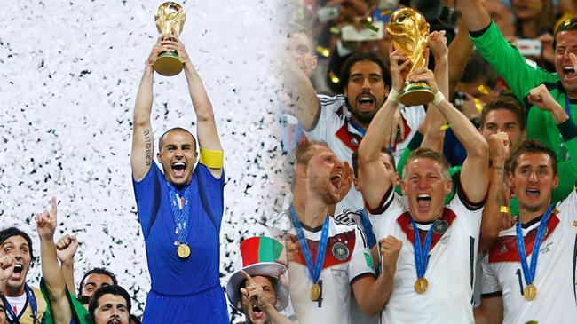

新浪体育的编辑肯定是没有学过概率论@新浪体育:#俄罗斯世界杯# 【巴西法国有神秘定律加成？】巴西法国争冠受神秘定律加持从1958年到2014年的15个世界杯冠军中，其中的8支冠军球队小组赛的战绩都是2胜1平，而本届世界杯只有2支球队在小组赛取得了2胜1平的战绩，就是巴西和法国。此外，在世界杯历史上小组赛全胜的球队夺冠概率只有11.5%。#天生要强# 

 巴西法国争冠受神秘定律加持从1958年到2014年的15个世界杯冠军中，其中的8支冠军球队小组赛的战绩都是2胜1平，而本届世界杯只有2支球队在小组赛取得了2胜1平的战绩，就是巴西和法国。此外，在世界杯历史上小组赛全胜的球队夺冠概率只有11.5%。#天生要强#
巴西法国争冠受神秘定律加持从1958年到2014年的15个世界杯冠军中，其中的8支冠军球队小组赛的战绩都是2胜1平，而本届世界杯只有2支球队在小组赛取得了2胜1平的战绩，就是巴西和法国。此外，在世界杯历史上小组赛全胜的球队夺冠概率只有11.5%。#天生要强#